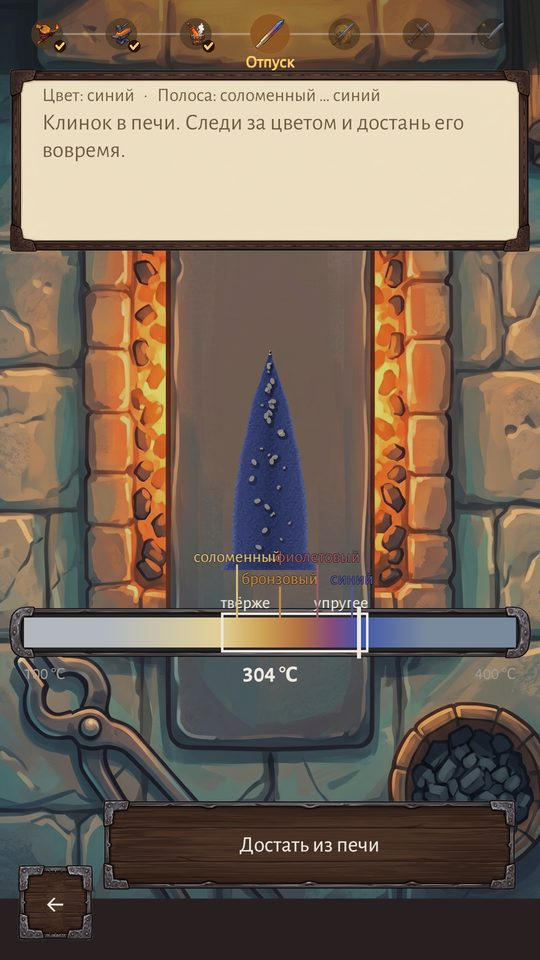
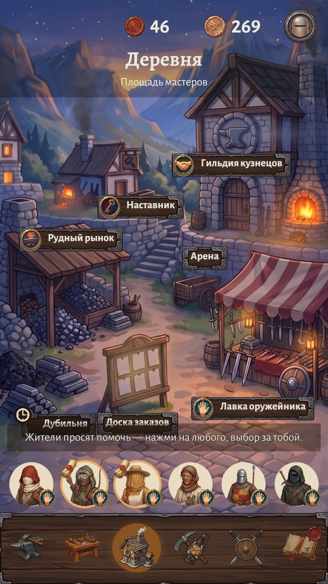

Горн: симулятор кузнеца
Куй мечи и броню настоящими приёмами кузнецов
Тебе досталась заброшенная кузница на краю деревни мастеров. Разожги горн и стань кузнецом, о котором заговорят. Здесь нет магии: только огонь, сталь и твоя рука.
- Android
- Без рекламы
- Работает без интернета
- Русский и английский
- Закрытый тест — скоро
Как это выглядит






Что в игре
- Правдоподобная ковкаМехи и рабочий жар, два молота, проба искрой и магнитом, закалка в воде или масле, отпуск по цветам побежалости, заточка на мокром круге и доводка на камне.
- Меч из деталейГарда, рукоять, навершие и баланс. Двух одинаковых клинков нет: форма, побежалость и клеймо — от твоей ковки.
- Осмотр в 3DГотовый меч и кирасу можно покрутить в руках: видны цвета отпуска, зазубрины и вмятины после боёв.
- Бронная мастерскаяКираса выколачивается куполом на пне и собирается на заклёпках и ремнях.
- ЛавкаПокупай гарды, рукояти и навершия для сборки, продавай лишнюю руду. За честь арены — клейма и инструменты.
- Деревня и заказыЖители приносят заказы с условиями. С ними можно подружиться — от незнакомца до друга кузницы.
- Шахта по ярусамФонарь, масло, рюкзак. Чем глубже, тем богаче руда и крупнее звери — медоед и ребристый тритон. Бои «до сдачи» — никто не погибает.
- Арена и лестница гильдииБой теней за ширмой: блестит только твой металл. Восемь учеников-соперников и разбор каждой зазубрины.
- Журнал мастераПочему трескается сталь, что такое точка Кюри, какие звери под угрозой — настоящие факты с источниками.
- МастерскаяГорн, наковальня и верстак улучшаются своей рудой и монетами. Испытания гильдии и стена лучших работ.
Дальше
Игра в разработке. Впереди другие виды снаряжения — топоры, булавы, шлемы, — кожевенная мастерская, лес и побережье с новыми зверями.
Закрытый тест
Скоро начнётся закрытый тест в Google Play. Хочешь попробовать первым — вступи в группу тестеров: участники группы получат приглашение. Новости и ролики — в Telegram-канале.
Связь
Вопросы, отзывы и сообщения об ошибках: forgewright.games@gmail.com
Игра не собирает личные данные и не показывает рекламу — подробнее в политике конфиденциальности.